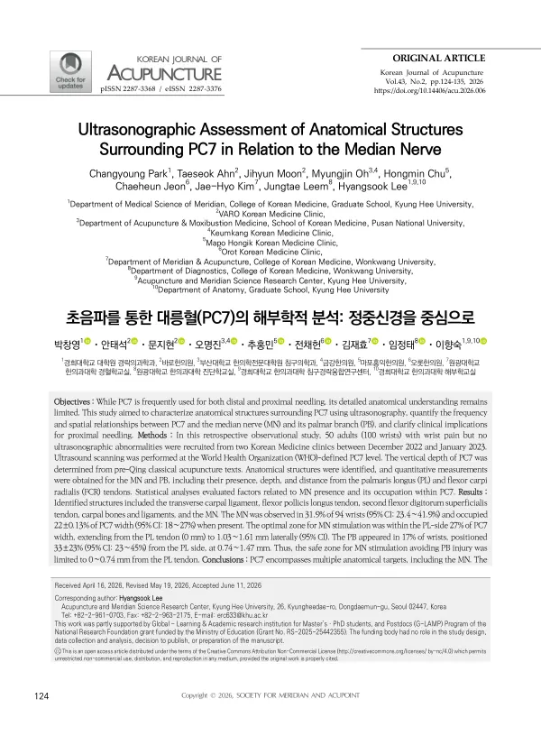

Ultrasonographic Assessment of Anatomical Structures Surrounding PC7 in Relation to the Median Nerve
Park C, Ahn T, Moon J, Oh M, Chu H, Jeon C, Kim JH, Leem J, Lee H
Korean Journal of Acupuncture 43(2):124-135

첫 장 · 오픈액세스First page · open access
논문 소개Summary
손목의 대릉혈(PC7) 주위에 무엇이 있는지를 초음파로 살펴본 후향적 관찰연구입니다. 손목 통증이 있으나 초음파상 이상이 없는 성인 50명, 손목 100개를 두 한의원에서 모아 세계보건기구가 정한 대릉혈 높이를 스캔했습니다. 정중신경은 손목 94개 중 31.9%에서만 보였고, 보일 때에도 대릉혈 너비의 22%를 차지했습니다. 정중신경을 겨냥하려면 긴손바닥근 힘줄 쪽 27% 안쪽이어야 하는데, 손바닥가지가 손목의 17%에서 그 근처를 지나 이를 피하는 구간은 힘줄에서 0.74 mm 이내로 좁아집니다. 저자들은 대릉혈이 정중신경과 무관한 자침에는 대체로 안전하나 정중신경을 겨냥한 자침은 정밀도가 떨어진다고 보았습니다.
A retrospective observational study using ultrasonography to characterise what lies around PC7 at the wrist. Fifty adults (100 wrists) with wrist pain but no ultrasonographic abnormality were recruited from two Korean medicine clinics and scanned at the PC7 level defined by the World Health Organization. The median nerve was seen in only 31.9% of 94 wrists and, when present, occupied 22% of the width of PC7. Targeting the nerve would require needling within the 27% of that width on the palmaris longus side, but its palmar branch runs nearby in 17% of wrists, narrowing the zone that avoids the branch to within 0.74 mm of the tendon. The authors conclude that PC7 is generally safe for needling unrelated to the median nerve, but that needling aimed at the nerve itself lacks precision.
인용Cite
Park C, Ahn T, Moon J, Oh M, Chu H, Jeon C, Kim JH, Leem J, Lee H. Ultrasonographic Assessment of Anatomical Structures Surrounding PC7 in Relation to the Median Nerve. Korean Journal of Acupuncture. 2026;43(2):124-135. doi:10.14406/acu.2026.006